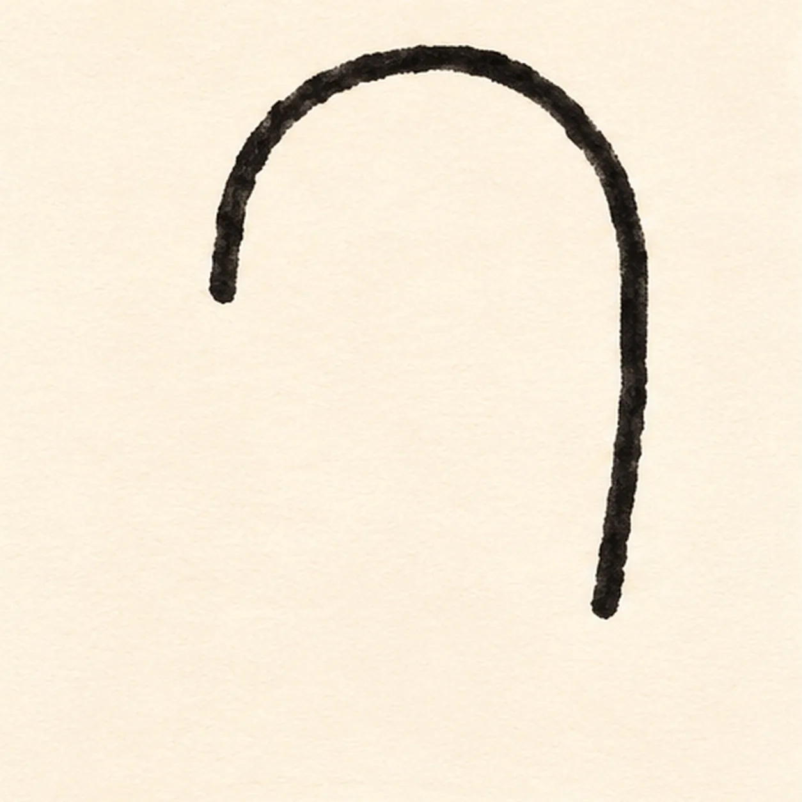
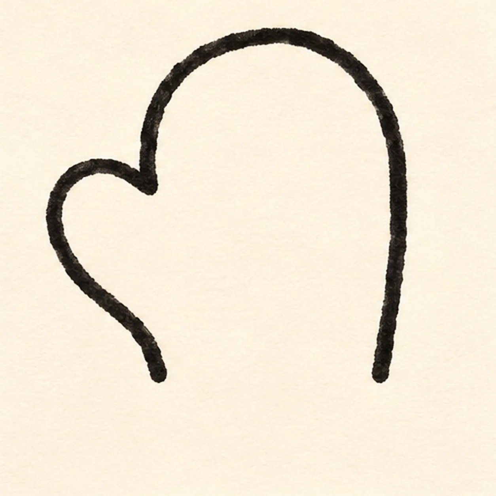
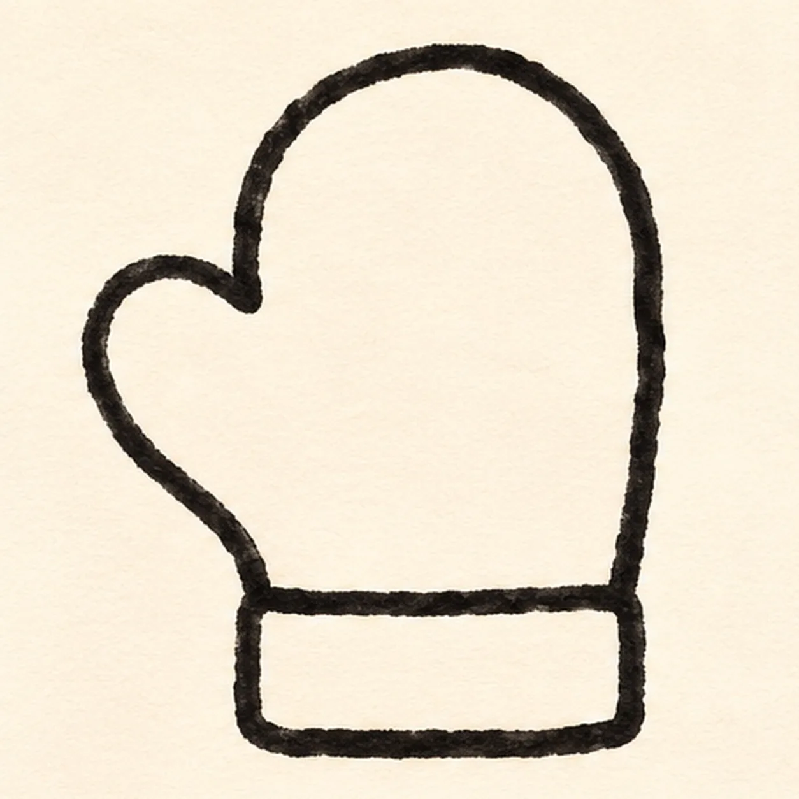
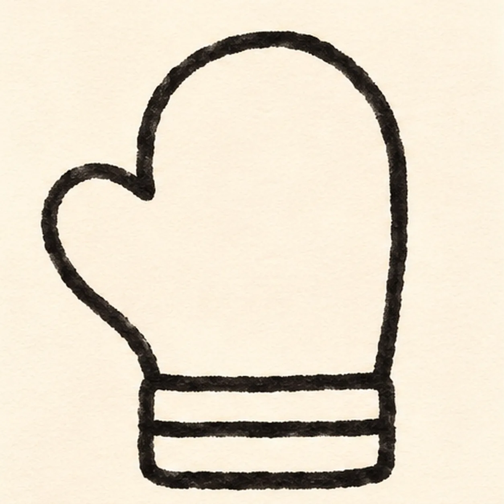
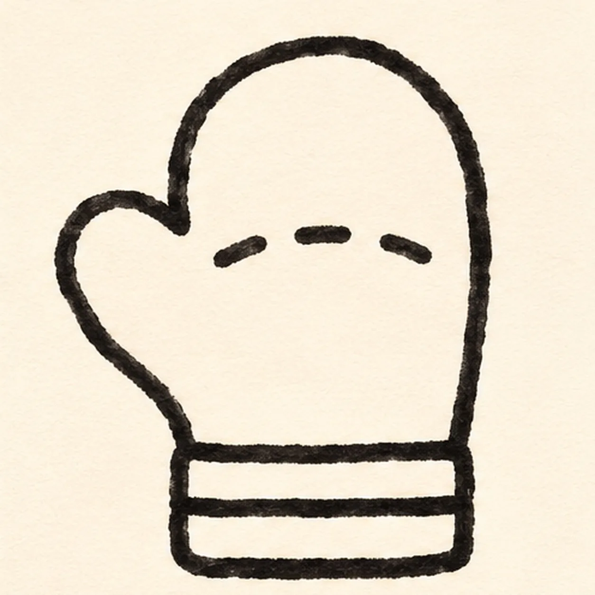

Felt-tip marker mode
Let's draw a cartoon mitten
Treat this as one playful practice round: sketch the idea loosely, simplify the shapes, then commit with confident marker outlines and bright fills.
-
01

Shape the palm
Draw the rounded fingertip arch and right palm edge; stop the short left edge at the future thumb join, leaving the wrist open.
Marker tip: Leave the left side and wrist open for attachments.
-
02

Attach the thumb
From the open left endpoint, loop the thumb outward and back down toward the wrist, leaving both wrist ends open.
Marker tip: Follow the open endpoint instead of crossing the palm edge.
-
03

Add the cuff
Across the open wrist, add a wide rectangular cuff joined to both lower palm ends.
Marker tip: Connect the cuff to both wrist ends.
-
04

Stripe the cuff
Draw one horizontal line through the cuff, making two parallel cuff bands.
Marker tip: One divider gives the cuff two bands.
-
05

Mark three stitches
Place exactly three short dash stitches in a shallow curve across the palm.
Marker tip: Count exactly three stitches.
-
06
Color the mitten
Fill the established palm red and both cuff bands teal with textured marker strokes; keep the three stitches visible.
Marker tip: Let white paper grain show through the marker strokes.